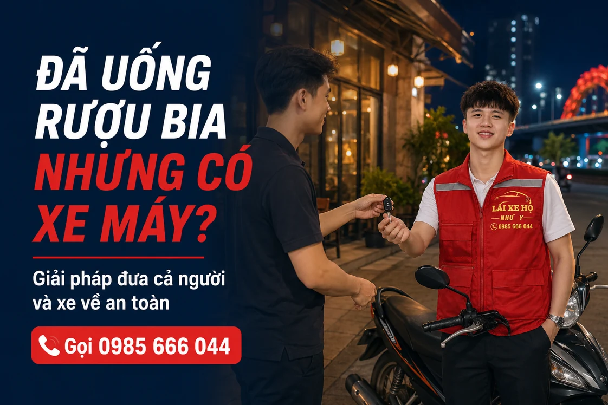

NHƯ Ý DRIVER · CẨM NANG DI CHUYỂN
Uống rượu bia nhưng mang theo xe máy: đưa cả người và xe về thế nào?
Đã uống rượu bia và còn xe máy ở điểm hẹn, bạn nên sắp xếp người lái thay hoặc nơi gửi xe rồi dùng phương tiện khác. Hãy cân nhắc đồng thời việc người về và xe về, nhất là khi nhóm có nhiều người nhưng chỉ một chiếc xe.

Trước hết, bỏ phương án tự lái sau buổi tiệc
Việc chiếc xe đang ở ngay bãi không có nghĩa bạn phải tự điều khiển để mang nó về. Hãy tách hai việc: bạn sẽ về bằng cách nào và xe sẽ được xử lý ra sao. Từ đó, chọn phương án phù hợp thay vì quyết định chỉ vì ngại quay lại lấy xe.
Nếu có bạn bè hoặc người thân đi cùng, trao đổi trước ai sẽ liên hệ và giữ chìa khóa. Bạn nên xử lý việc đặt xe khi còn ở trong quán, không đợi đến lúc đứng ngoài bãi mới tìm phương án.
Phương án 1: gửi yêu cầu lái hộ xe máy
Dịch vụ lái hộ xe máy tại Đà Nẵng dành cho nhu cầu có xe riêng và cần người điều khiển thay. Khi liên hệ, nêu xe tay ga, xe số hay côn tay, số người cần về và địa chỉ trả. Cách bố trí người và xe cần được thống nhất trước.
Nếu người đi cùng không thể ngồi vững trên xe, hãy nhờ người thân hỗ trợ và trao đổi phương tiện khác phù hợp hơn. Không chỉ chốt việc đưa xe về mà bỏ qua nhu cầu di chuyển của người.
Phương án 2: gửi xe lại rồi quay lại lấy
Nếu địa điểm cho phép giữ xe qua đêm, bạn có thể chọn phương tiện khác để về. Hỏi trước giờ đóng bãi, phí gửi, vé nhận xe và giờ được lấy vào hôm sau. Không mặc định quán nào cũng giữ xe qua đêm.
Khi tính chi phí, cộng cả lượt về nhà, phí gửi và lượt quay lại lấy xe. Nếu sáng hôm sau cần xe sớm, hãy xem giờ mở bãi có khớp kế hoạch của mình không.
Chuẩn bị gì khi đặt lái hộ xe máy?
- Gửi ghim vị trí cùng tên bãi hoặc cổng nhận xe.
- Chuẩn bị chìa khóa, vé xe và mũ bảo hiểm phù hợp.
- Nêu rõ số người cần di chuyển, không chỉ loại xe.
- Hỏi đúng giá xe máy, giờ đi và các điểm ghé.
- Đối chiếu tài xế trước khi bàn giao chìa khóa.
Giá xe máy khác giá ô tô
Như Ý Driver có bảng giá riêng cho xe máy và ô tô. Hãy chọn đúng loại phương tiện khi xem giá tham khảo và xác nhận tổng phí cho hành trình của mình. Nếu về khuya, hỏi thêm phụ phí theo giờ đi.
Gọi 0985 666 044 hoặc nhắn Zalo với địa chỉ đón, điểm đến và loại xe. Sau khi được xác nhận, chờ ở điểm hẹn đã thống nhất để việc nhận xe thuận tiện.
So sánh hai phương án trên cùng một kế hoạch
| Điều cần tính | Gọi lái hộ xe máy | Gửi xe lại |
|---|---|---|
| Chiếc xe | Trao đổi phương án đưa xe tới địa chỉ đã chốt. | Hỏi chỗ giữ được phép, giờ mở bãi và vé nhận xe. |
| Người đi cùng | Báo đủ số người và khả năng di chuyển thực tế. | Chọn phương tiện đưa đón phù hợp với cả nhóm. |
| Chi phí | Hỏi giá xe máy, giờ đi, điểm trả và khoản chờ. | Tính phí gửi, lượt về nhà và lượt quay lại lấy xe. |
Không lấy bảng giá ô tô để dự tính xe máy. Xem phần giá xe máy rồi gửi thông tin để được xác nhận chuyến.
Câu hỏi thường gặp
Đi hai người và có một xe máy thì cần báo gì?
Báo đầy đủ số người cần về để điều phối trao đổi cách bố trí. Không tự mặc định một phương án chở người sẽ phù hợp cho mọi trường hợp.
Chỉ cần đưa xe về, không đi cùng thì sao?
Hãy nêu rõ yêu cầu khi liên hệ để thống nhất người bàn giao, người nhận xe và điều kiện thực hiện trước khi đặt.
Thông tin liên quan
HÃY CHỦ ĐỘNG CHO CHUYẾN ĐI
Cần người lái xe thay bạn?
Gửi điểm đón, điểm đến, loại xe và giờ đi. Như Ý Driver sẽ kiểm tra lịch, thống nhất chi phí và thời gian đón trước khi xác nhận chuyến.